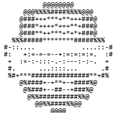

Welcome
I am a Developer
When I entered high school, I had the privilege of studying Information Technology in an integrated program.
There, I was exposed to new possibilities and gained a deeper understanding of the fundamentals and applications of various programming languages,
as well as computer assembly and maintenance.
Since then, I’ve never stopped using computers — or questioning how certain technologies work.
I believe that curiosity is the bridge between convenience and technological advancement.
As long as there are people who ask questions, there will always be new technologies and new opportunities.
About me
I discovered my love for technology as a child, I always asked how televisions worked and even how a lamp
could light up a hallway.
When I had my first computer, at the age of 7, I was able to start researching and understanding various
issues related to my daily life.
I spent hours in front of that old monitor and I could feel the static electricity that raised the hair
on my arms and shocked me when I touched a doorknob.
Since then, I haven't done anything other than have fun using the computer, I've made a lot of drawings
in paint, and I've visited a lot of random websites.
When I reached high school I had the merit of studying information technology in an integrated way, there
I was able to see new possibilities
and better understand the fundamentals and applications of different programming languages, as well as
computer assembly and maintenance.
Finally, I never stopped using the computer, much less wondering about how certain technologies work.
I believe that curiosity is the threshold between convenience and technological advancement. As long as
there are people who
question themselves, there will always be new technologies and new opportunities.

ID da credencial: F81E44CB2AA1A08C
Número da certificação: 554DA7-94062O
Obtido em: 26 de fevereiro de 2025
Expira em: 26 de fevereiro de 2026
Microsoft Certified: Azure Developer Associate
The AZ-204: Developing Solutions for Microsoft Azure certification exam validates the skills and
knowledge required to develop cloud-based solutions using Microsoft Azure.
The exam covers topics such as application development, storage implementation, security,
monitoring, troubleshooting,
and integration with Azure services and third-party services.
Skills measured:
Develop Azure compute solutions
Develop for Azure Storage
Implement Azure security
Monitor, troubleshoot, and optimize Azure solutions
Connect to and consume Azure and third-party services